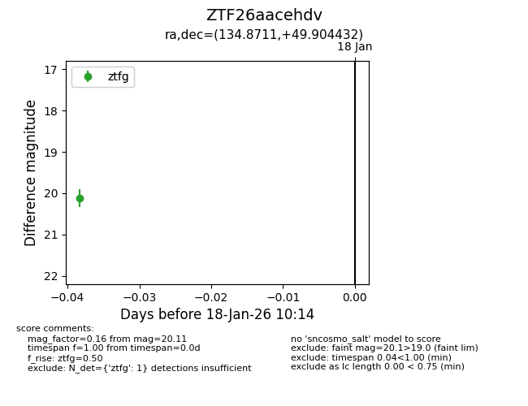
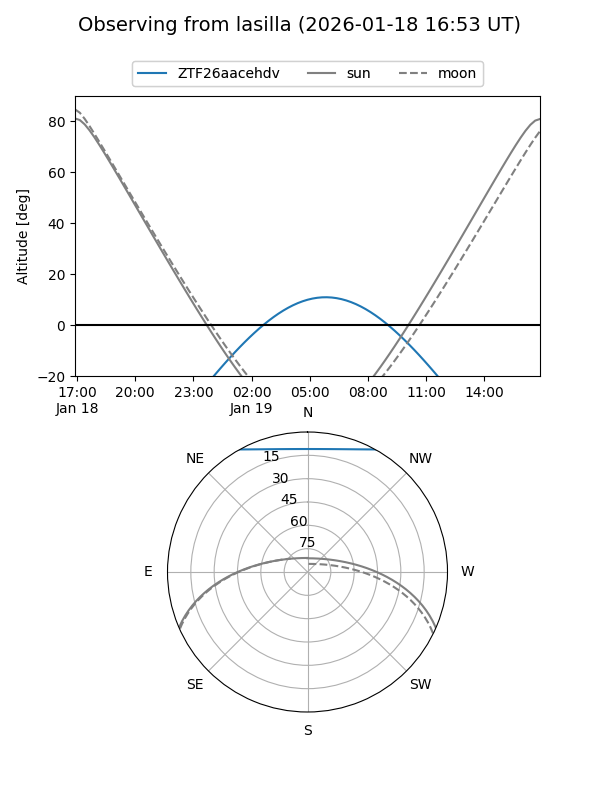
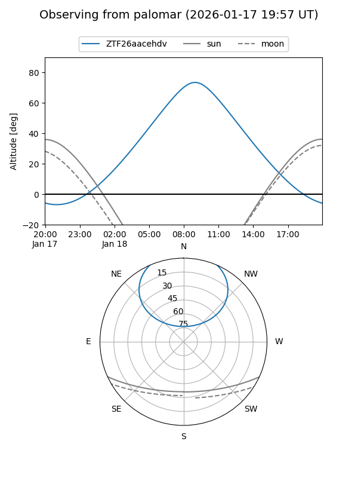

ZTF26aacehdv
Target ZTF26aacehdv at 2026-01-18 10:15
Aliases and brokers:
FINK: link
Lasair: link
ALeRCE: link
alt names
ZTF26aacehdv (ztf,fink_ztf)
Coordinates:
equatorial (ra, dec) = 134.8711,+49.90443
equatorial (HMS+DMS) = 08:59:29.07,+49:54:15.96
galactic (l, b) = (169.0545,+40.74306)
Flags:
Photometry:
last ztfg=20.11
1 ztfg detections
Lightcurve

Visibility


Additional plots